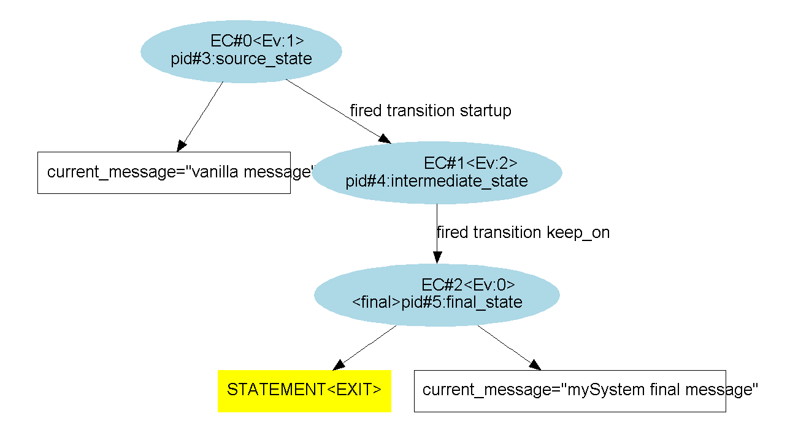
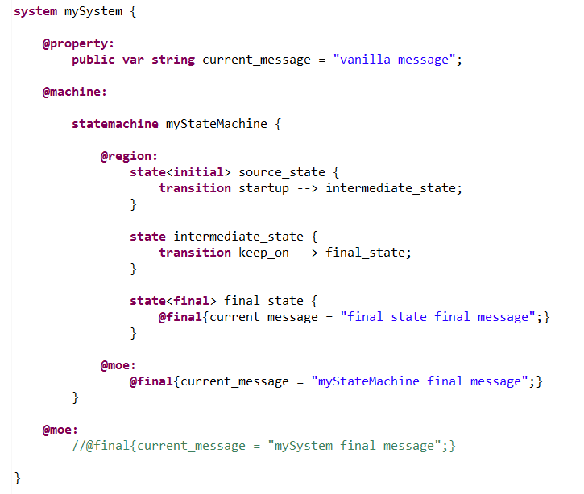
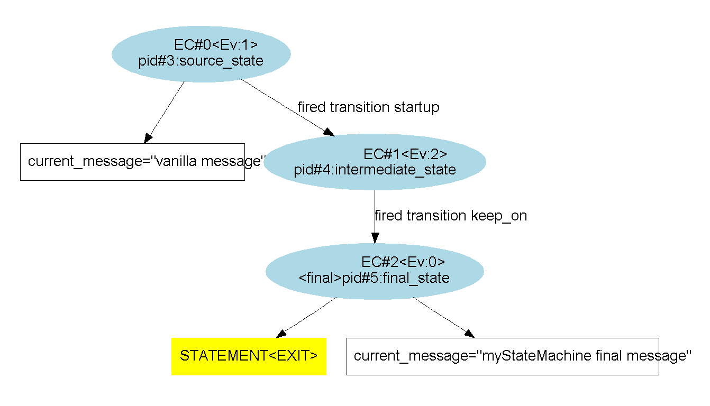
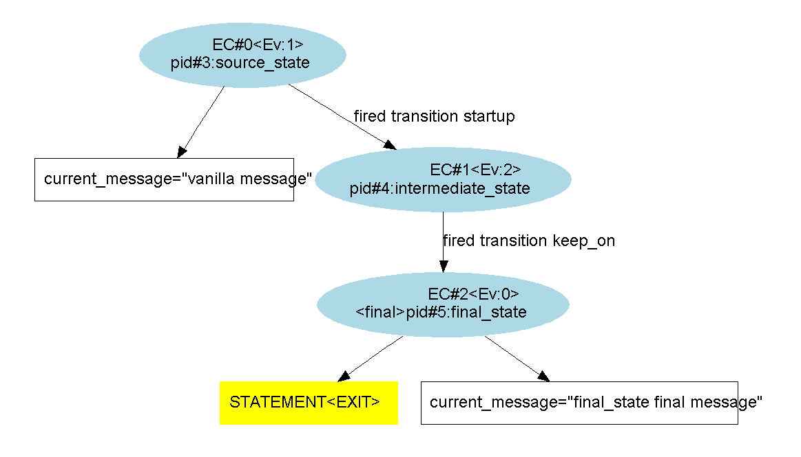
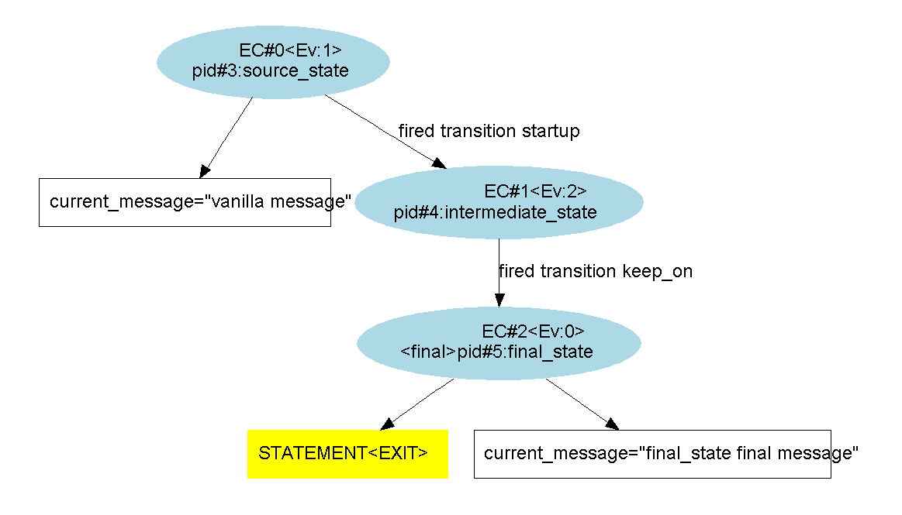

The "@final{...}" activity primitive contains instructions that ought to be executed when elements of the system reach a final state.
It can have as a parent a system, a statemachine or a state. According to the parent it is dedicated to different things :
Remark : In composite states, the evaluation of "final" outgoing transitions is done as soon as their "@final{...}" primitive has been evaluated.
In the following example, we'll see implementations of the "@final{...}" primitive of a system, an automaton statemachine and a final basic state.
The code is the following (there are also "@init{...}" primitives used but it's not the point) :

When executing an exploration, we get the following graph, where we can see what changes have been made on the variable values at each steps of calculus :

In the following example, all three "@final{...}" primitives of the previous example try to modify the same variable. It will allow us to find out the order or priority in which those modifications are made.
The code is the following (we've removed the "@init{...}" primitives to simplify the example) :

The resulting graph is shown below; we see that the first retained value is the system's value :
To see what's next in the priority order, we remove the system value assignment instruction :
The resulting graph is shown below; we see that the second retained value is the statemachine's value :
Finally, with the following code, we can verify that the final state value is also taken into account :
 

Finally, the priority order is from the outside to the inside. In other words, the highest priorities are the outermost "@final{...}" primitives.
The priority order is the exact opposite of the one of the "@init{...}" primitives.